SPORTS MEDICINE & ARTHROSCOPY DIGEST
运动医学 · 关节镜文献速览
第 006 期 · 2026-09-11
昨日（9月10日）10 本核心期刊新收录 22 篇 · 本期精选 12 篇
按关节分类：足踝 3 · 髋 1 · 膝 5 · 肩 2 · 运动防护 1
编者按 EDITOR'S NOTE
今天 22 篇里足踝一口气上了 3 篇，而且恰好对应"保关节、做微创、筛风险"三个临床动作：全踝置换失败/距骨坏死的保运动挽救、腓骨肌腱滑脱的内镜下沟加深、以及北医三院团队关于"全身关节松弛预测再扭伤"的 290 例队列。对足踝医生，这是密度很高的一期。
其中北医三院那篇尤其值得关注——慢性踝不稳用股薄肌腱解剖重建后，全身关节松弛（GJL）患者的非接触再扭伤率 15.3% vs 3.7%、再不稳率 6.9% vs 0%，GJL 是独立预测因素（OR 4.3）。这直接回答了"重建术后谁还会再扭"这个让术者头疼的问题，也提示对松弛患者术前要谈清楚预期、术后康复和支具策略可能要更保守。
另外两条线也很有意思：膝那边，高位滑车发育不良会让 PTI/CDI 两个髌骨高度指标互相"打架"（38% 不一致），提醒我们别在发育不良膝上死磕单一指标；AI 那边，图注意力网络预测 MMPRT 非手术 5 年失败 AUC 0.69-0.77，还有 MLB 投球追踪里"球速逐场下降"是盂唇损伤的前兆——从踝到膝到肩，今天这批文献都在做同一件事：把"谁的风险高"从经验判断推向可量化。
▍足踝关节 · 3 篇
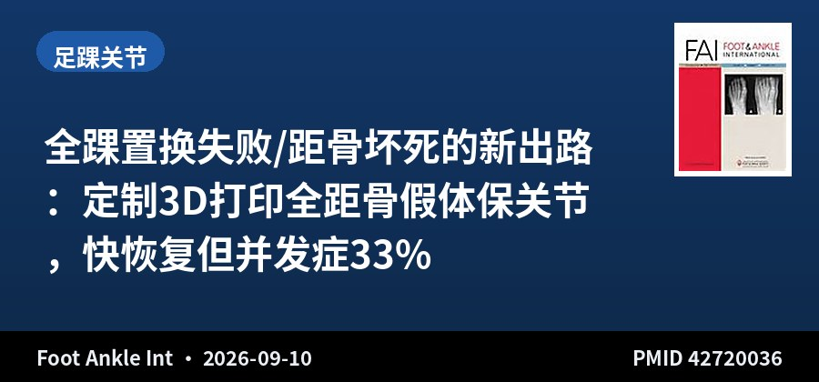
回顾队列 · 18例 · 平均37个月
全踝置换失败/距骨坏死的新出路：定制3D打印全距骨假体保关节，快恢复但并发症33%
Motion-Preserving Salvage for Failed Total Ankle Arthroplasty or Talar AVN: Outcomes of Combined Total Ankle Arthroplasty with Custom 3D-Printed Total Talus Replacement
Foot Ankle Int · 2026-09-10 · 匹兹堡大学 · PMID 42720036
一句话结论：18 例全踝置换失败或距骨坏死患者接受 TAA+定制 3D 打印全距骨置换，并发症率 33.3%，但功能恢复快（平均 47 天全负重、10.7 周穿普通鞋），全部实现距骨假体与跟骨骨整合。
要点：9 例距骨 AVN + 9 例 TAA 失败；并发症 33.3%（AVN 组 44%、翻修组 22%），包括 2 例深部感染需清创、1 例需膝下截肢；再手术率 11.1%；距下关节融合用 2 枚螺钉+骨髓浓缩液；对比传统胫距跟融合（不愈合率近 30%）保留了活动度。
对临床的启示：面对"距骨塌了/假体沉了"这种传统上只能做融合（牺牲活动、不愈合率还高）的难题，3D 打印全距骨假体提供了保活动度的选项——但 33% 的并发症率提醒：这是严格筛选人群的挽救性手术，感染和神经并发症要重点防范。
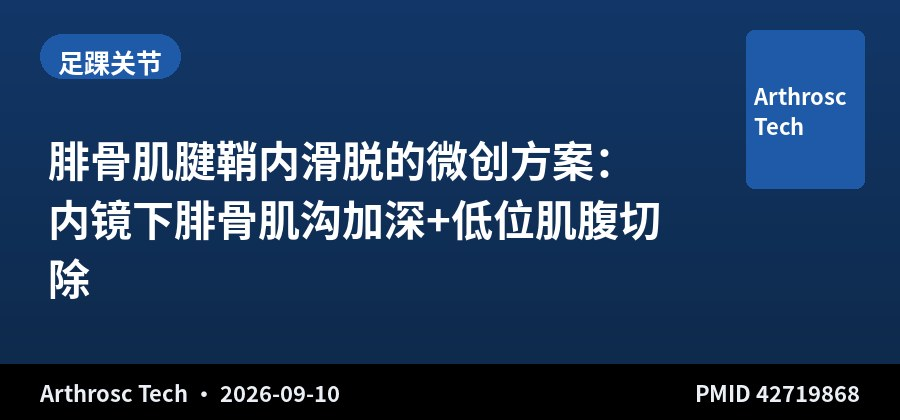
手术技术 · 深圳/香港团队
腓骨肌腱鞘内滑脱的微创方案：内镜下腓骨肌沟加深+低位肌腹切除
Endoscopic Retrofibular Groove Deepening and Resection of a Low-Lying Muscle of the Peroneus Brevis for the Management of Intrasheath Subluxation of Peroneal Tendons Associated With a Low-Lying Peroneus Brevis Muscle
Arthrosc Tech · 2026-09-10 · 深圳大学二附院/北区医院 · PMID 42719868
一句话结论：针对腓骨肌沟过浅/过平合并低位肌腹占位导致的腓骨肌腱鞘内滑脱，报告内镜下沟加深+低位肌腹切除的微创技术。
要点：适应于纤维骨性隧道狭窄型鞘内滑脱；优势：美观、软组织创伤小、术后疼痛轻、早期活动、恢复快、腱周纤维化与主观紧绷感更少。
对临床的启示：腓骨肌腱鞘内滑脱常被漏诊（MRI 上不如脱位显眼），当发现沟浅/平合并低位肌腹时，内镜下同时"加深沟+切肌腹"能一次性解决两个病因。对做踝镜的医生是可直接借鉴的技术路径。
📷 原文图片（共 4 张 · 左右滑动查看）
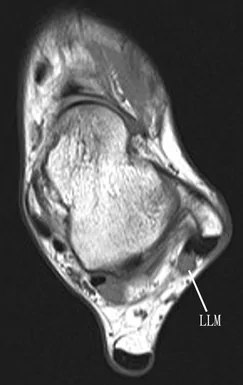
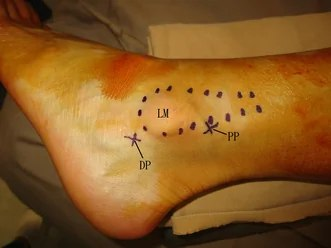
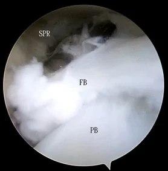
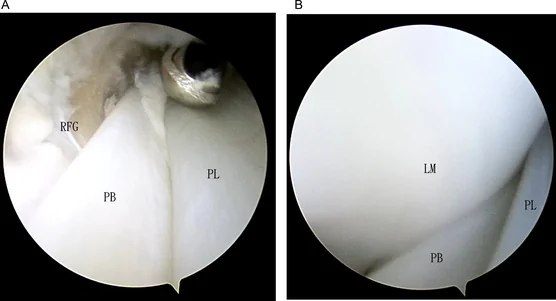
图片来源：原文开放全文（PubMed Central），版权归原出版方
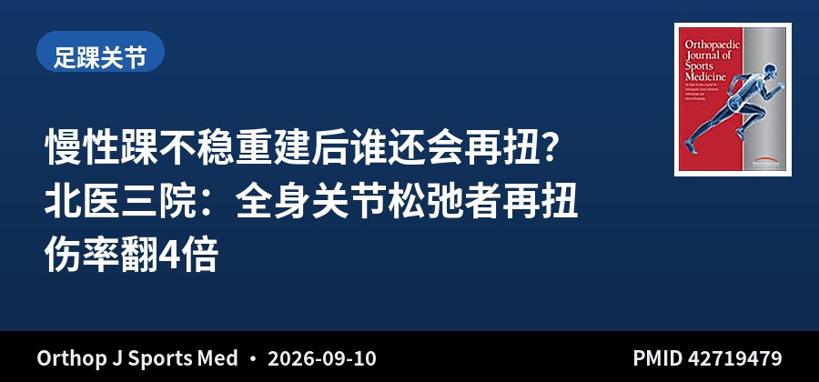
队列研究 · 290例 · 北医三院
慢性踝不稳重建后谁还会再扭？北医三院：全身关节松弛者再扭伤率翻4倍
Generalized Joint Laxity Is an Independent Predictor of Postoperative Resprain Following Anatomic Reconstruction Using Gracilis Tendon Autograft for Patients With Chronic Lateral Ankle Instability
Orthop J Sports Med · 2026-09-10 · 北京大学第三医院 · PMID 42719479
一句话结论：290 例慢性踝不稳行股薄肌腱解剖重建，全身关节松弛（GJL）者术后非接触再扭伤率 15.3%（无 GJL 3.7%）、再不稳率 6.9%（无 0%），GJL 是独立预测因素（OR 4.29，P=.004）。
要点：GJL 组 72 例、非 GJL 组 218 例，均随访 ≥24 个月；两组术后 VAS、Tegner、RTS 率、并发症无显著差异；但 GJL 组 Karlsson 评分更低（90.0 vs 95.6）；Kaplan-Meier 累积成功率 GJL 组显著更低（P=.001）。
对临床的启示：直接回答"重建术后谁还会再扭"：全身关节松弛是独立危险因素，风险约 4 倍。对松弛患者，术前要如实交代复发预期，术后康复（尤其本体感觉、神经肌肉控制）和支具策略应更保守、更长程。
原文：doi.org/10.1177/23259671261477818
📷 原文图片（共 3 张 · 左右滑动查看）
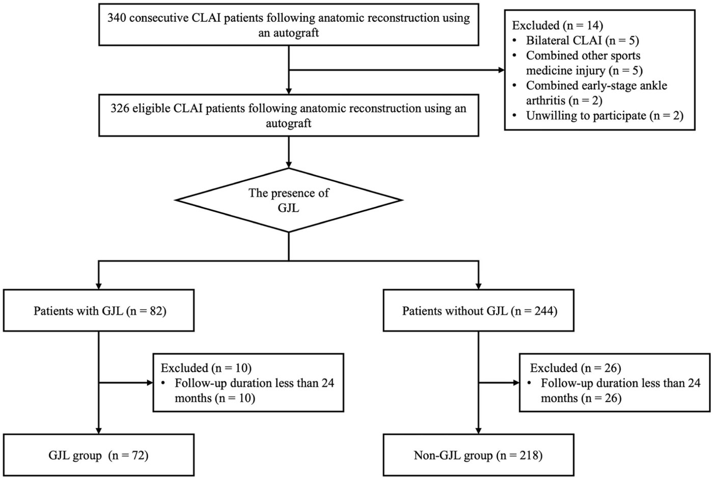
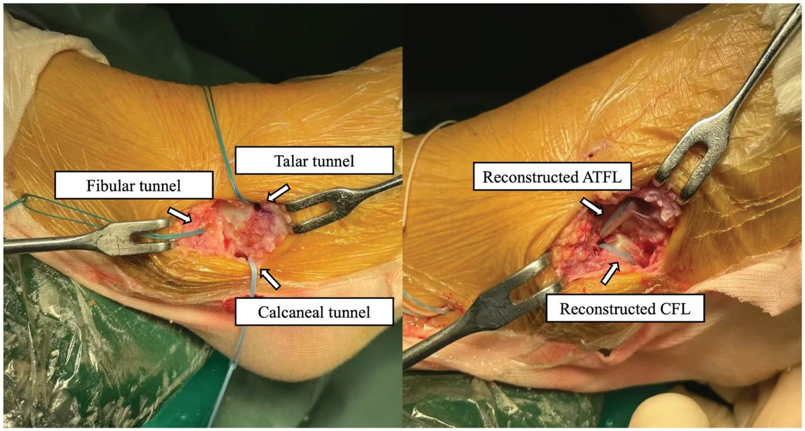
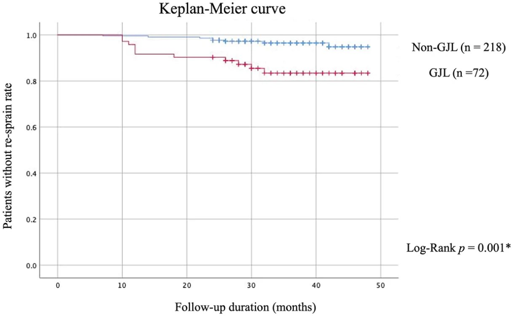
图片来源：原文开放全文（PubMed Central），版权归原出版方
▍髋关节 · 1 篇
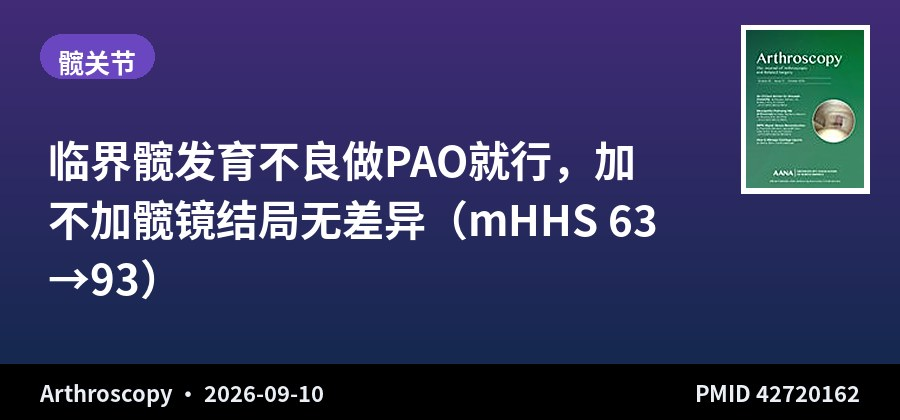
回顾对照 · 73例 BHD
临界髋发育不良做PAO就行，加不加髋镜结局无差异（mHHS 63→93）
Borderline Hip Dysplasia Shows Significantly Improved Clinical and Radiographic Outcome When Treated With Periacetabular Osteotomy, With or Without Concomitant Hip Arthroscopy
Arthroscopy · 2026-09-10 · 布宜诺斯艾利斯意大利医院 · PMID 42720162
一句话结论：73 例临界髋发育不良（BHD）行 PAO，术后 mHHS 63.3→93.1、HOS 61.6→92.3 显著改善，MCID/PASS 达成率 >95%；加不加同期髋镜在所有临床和影像结局上均无显著差异。
要点：223 例中筛出 73 例 BHD（LCEA>20°、前壁指数≤0.3 等）；髋镜组 36 例 vs 非髋镜组 37 例；随访 44-49 个月；SCB 达成约 70%；25 例并发症（3 例取内固定再手术）；按 Ottawa 分型各亚型结局也相当。
对临床的启示：对"临界发育不良到底要不要同时做髋镜"的争议，这份头对头比较给出务实答案：PAO 本身就能带来优秀结局，加髋镜未见额外获益。临床可据此简化决策——重点放在 PAO 的矫正质量，而非纠结是否加镜。
▍膝关节 · 5 篇
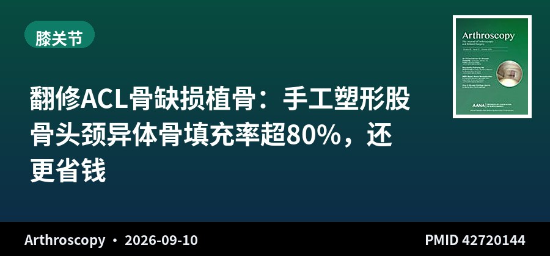
回顾队列 · 20胫骨/15股骨
翻修ACL骨缺损植骨：手工塑形股骨头颈异体骨填充率超80%，还更省钱
Bone Grafting Using Manually Contoured Femoral Head and Neck Allograft Successfully Fills Femoral and Tibial Tunnel Osteolytic Defects in 2-Stage Revision ACL Reconstruction: A CT-Guided Analysis
Arthroscopy · 2026-09-10 · 科罗拉多大学 · PMID 42720144
一句话结论：两期翻修 ACLR 用手工塑形股骨头颈异体骨填充隧道骨缺损，胫骨隧道填充率 80-92%、股骨隧道 68-82%，且比预制骨栓更省成本。
要点：20 胫骨 + 15 股骨植骨，术后平均 123 天 CT 评估；胫骨填充率高于股骨（P<.05）；测量 ICC 0.98-0.99；无并发症；股骨头颈异体骨比预制 dowel 成本更低。
对临床的启示：翻修 ACL 的隧道骨溶解是"一期还是两期"的关键变量——这份 CT 证据说明手工塑形的股骨头颈异体骨能可靠填满缺损，为两期翻修的一期植骨提供了低成本、高可重复的方案。
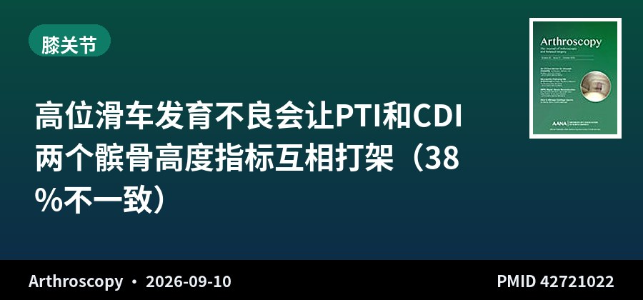
回顾队列 · 152膝
高位滑车发育不良会让PTI和CDI两个髌骨高度指标互相打架（38%不一致）
High-Grade Trochlear Dysplasia Confounds Patellar Height Assessment Using the MRI-Derived Patellotrochlear and Radiograph-Derived Caton-Deschamps Indices
Arthroscopy · 2026-09-10 · Rush University · PMID 42721022
一句话结论：PTI 与 CDI 在无发育不良膝高度一致，但在高位滑车发育不良（Dejour B-D）中显著分歧，38.2% 的膝出现髌骨高位判定不一致；两者都与功能复位角（IRA）无关联。
要点：152 膝（96 女，平均 23.3 岁）；PTI 随 Dejour 分级升高（A/D 型更高），CDI 在 A/C 型更低；以 CDI≥1.2、PTI≤0.28 为界，38.2% 判定矛盾；无发育不良膝中 PTI 判定的高位全部与 CDI 一致，高位发育不良中一致率仅 61.1%；两指标与 IRA 均无相关（P>.05）。
对临床的启示：在高位滑车发育不良的膝上，别用单一髌骨高度指标下"高位髌骨"的诊断——PTI 可能失真。这类患者应结合多个指标+临床综合判断，尤其决定是否做胫骨结节移位时。
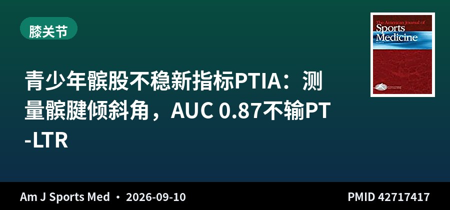
病例对照 · 284膝 · HSS
青少年髌股不稳新指标PTIA：测量髌腱倾斜角，AUC 0.87不输PT-LTR
Patella Alta and Trochlear Dysplasia as a Determinant of Patellar Tendon Lateralization and Inclination: A Cross-sectional MRI Study in Adolescents With Patellofemoral Instability
Am J Sports Med · 2026-09-10 · 纽约特种外科医院HSS · PMID 42717417
一句话结论：HSS 提出新指标髌腱倾斜角（PTIA），PFI 患者 PTIA（22.8°）与 PT-LTR（9.76mm）均显著高于对照，诊断 AUC 分别为 0.866 和 0.903，即使 TT-TG 正常仍有价值。
要点：284 膝（PFI 142 + 对照 142）；PTIA 最优界值 16°、PT-LTR 最优界值 4mm；两者与髌骨倾斜、CDI、滑车角均正相关；高位髌骨显著增加 PT-LTR（P<.001）；在 TT-TG 正常的亚组中仍提供补充信息。
对临床的启示：髌腱方向的软组织指标（PTIA/PT-LTR）能在骨性指标 TT-TG 正常时捕捉到髌骨外移——对"TT-TG 正常但临床就是不稳"的疑难病例，多一个量化抓手。PTIA 简单可测，适合纳入常规 MRI 报告。
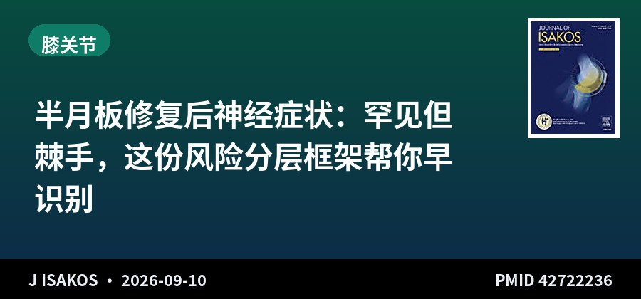
Current Concepts 综述
半月板修复后神经症状：罕见但棘手，这份风险分层框架帮你早识别
Neurological Symptoms After Meniscal Repair: Current Concepts in Prevention, Risk Stratification, and Clinical Evaluation
J ISAKOS · 2026-09-10 · 阿根廷Austral大学医院 · PMID 42722236
一句话结论：半月板修复后神经症状罕见但可致持续性感觉障碍/神经痛/运动障碍，本综述提出结合神经表型、手术因素、连续查体、影像与电生理的风险分层评估框架。
要点：类似术后表现可能来自短暂围术期现象或结构性神经损伤，需结合区域麻醉、止血带、入路、修复技术与半月板器械操作位置判断；连续查体是基石，高频超声/磁共振神经成像/神经传导/肌电图用于疑似结构性损伤；轻度非进展性缺损可观察，进行性恶化或疑似机械卡压考虑探查。
对临床的启示：半月板修复（尤其外侧、经后内侧入路）邻近隐神经/腓总神经分支——术后出现异常感觉时，用"时间×进展性"判断比单看症状本身更靠谱。这份框架可直接用于临床查房时的鉴别。
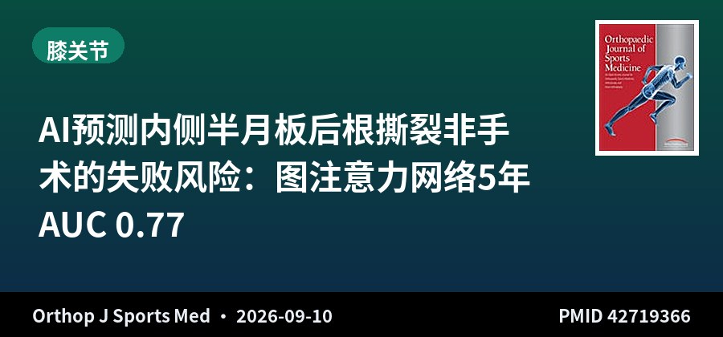
AI预测 · 233例 MMPRT
AI预测内侧半月板后根撕裂非手术的失败风险：图注意力网络5年AUC 0.77
Artificial Intelligence-Based Prediction of Prognosis After Nonsurgical Treatment for Medial Meniscus Posterior Root Tear
Orthop J Sports Med · 2026-09-10 · 全南大学 · PMID 42719366
一句话结论：233 例 MMPRT 非手术治疗，2 年失败率 15.5%、5 年 23.2%；深度学习图注意力网络（GGAT）预测失败 AUC 0.69-0.77，优于传统机器学习模型。
要点：失败=转 TKA 或矫正截骨；5 个传统模型（Elastic Net/MLP/SVM/随机森林/XGBoost）+ 提出 GGAT；GGAT 测试集准确率 0.83-0.91、敏感度 0.92-1.00；最重要预测因子：基线机械 HKA、症状时长、BMI、年龄、骨髓水肿、外侧股骨远端角、软骨下不全骨折等。
对临床的启示：MMPRT 到底"保守还是手术"，AI 模型把失败风险量化到 2 年和 5 年——虽然 AUC 还到不了临床独断的程度，但"机械轴+症状时长+BMI+骨髓水肿"这几个关键变量，术者现在就可以用来给患者做个性化谈话。
原文：doi.org/10.1177/23259671261470935
📷 原文图片（共 4 张 · 左右滑动查看）
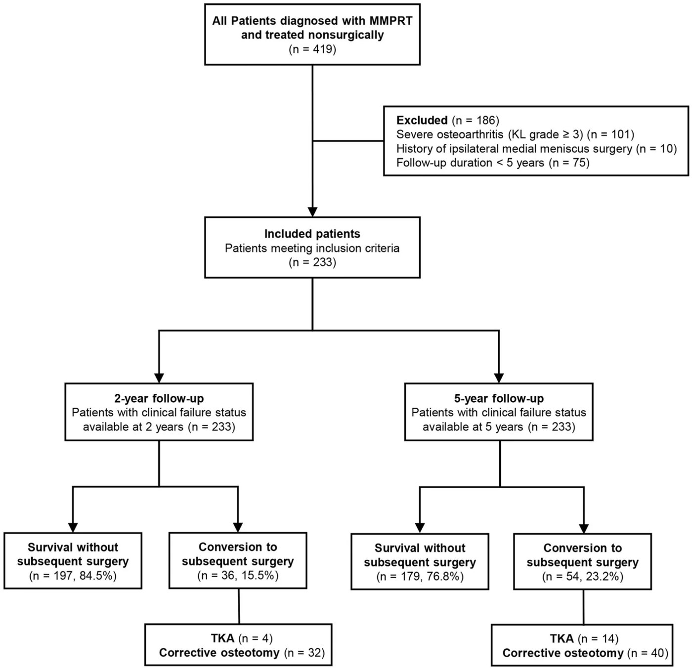
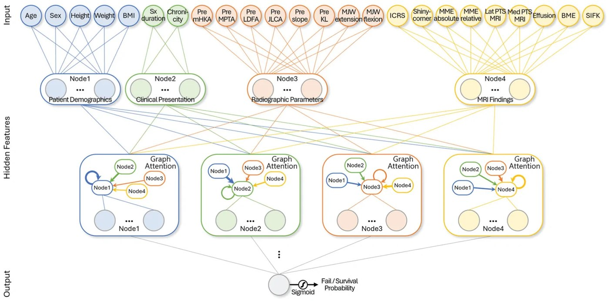
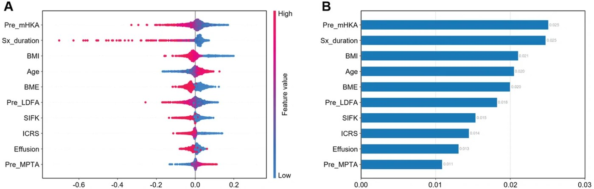
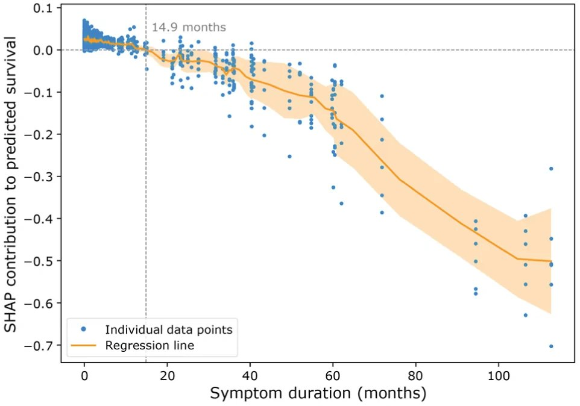
图片来源：原文开放全文（PubMed Central），版权归原出版方
▍肩关节 · 2 篇
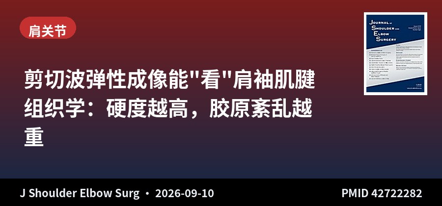
影像-病理对照 · 22例
剪切波弹性成像能"看"肩袖肌腱组织学：硬度越高，胶原紊乱越重
Shear-Wave Elastography for Assessing the Histological Characteristics of Torn Rotator Cuff Tendons
J Shoulder Elbow Surg · 2026-09-10 · 新南威尔士大学 · PMID 42722282
一句话结论：22 例肩袖撕裂术中取材对照：SWE 硬度值与胶原紊乱程度显著正相关（Jonckheere-Terpstra Z=2.67, P=.01），与细胞性分级也呈中度正相关（ρ=0.56）。
要点：混合高/低细胞区肌腱的 SWE 值显著高于均匀高细胞肌腱；SWE 与胶原紊乱呈单调递增；与腱细胞形态、基质、血管化、总 Bonar 评分无显著相关。
对临床的启示：把剪切波弹性成像从"测个硬度"推进到"反映组织学退化"——术前 SWE 高可能提示肌腱胶原已紊乱、修复愈合潜力差。这为术前判断"这肩袖还值不值得修、预后如何"提供了一个无创窗口。
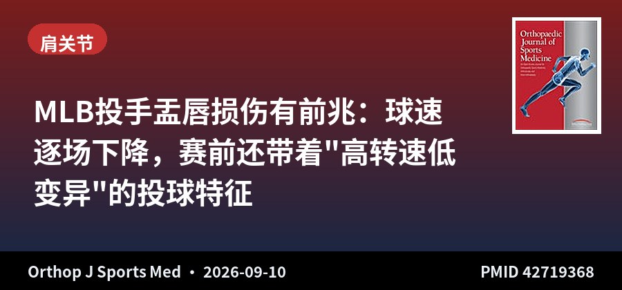
病例对照 · 16万球 · MLB
MLB投手盂唇损伤有前兆：球速逐场下降，赛前还带着"高转速低变异"的投球特征
Pitch-Tracking Risk Factors and Warning Signs for Shoulder Capsulolabral Injuries in Major League Baseball Pitchers
Orthop J Sports Med · 2026-09-10 · 哥伦比亚大学 · PMID 42719368
一句话结论：27 例接受盂唇修复的 MLB 投手（对照 54 例、16.2 万球）显示：伤前球速和转速更高、挥臂角度变异更低；伤前最后 5 场直球球速逐场下降 0.20 mph/场，是即将受伤的最清晰标志。
要点：直球球速 +1.46 mph、伸卡 +1.57 mph、转速更高（β=+0.32SD）、挥臂角度变异更低（β=-0.58SD）；受伤赛季球速显著下降（直球 -0.68、变化球 -1.07 mph）；最后 5 场直球 -0.20 mph/场、变化球 -0.30 mph/场（P<.001）。
对临床的启示："高负荷+低变异"的投球模式叠加"球速逐场掉"，是盂唇损伤的可量化前兆——这对运动医学的投手负荷管理、以及赛训监测（何时该减量/排查）有直接参考意义。
原文：doi.org/10.1177/23259671261431839
📷 原文图片（共 4 张 · 左右滑动查看）
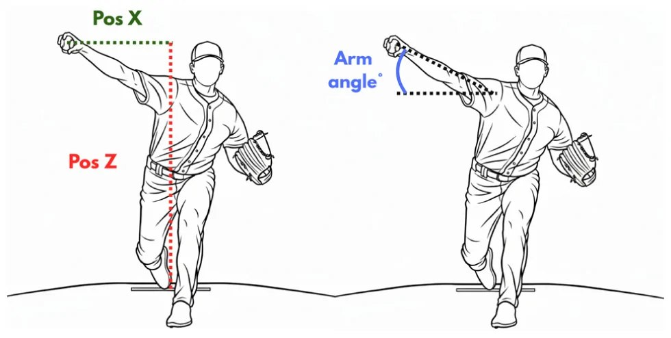
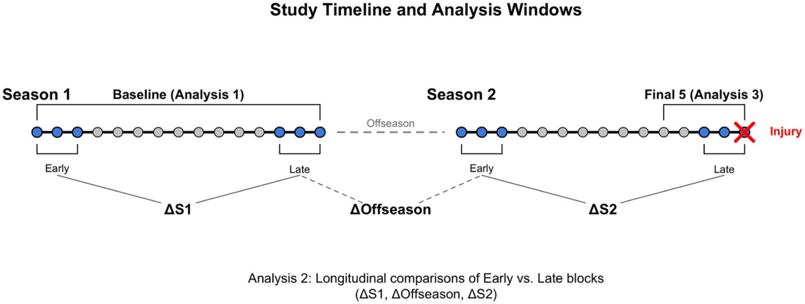
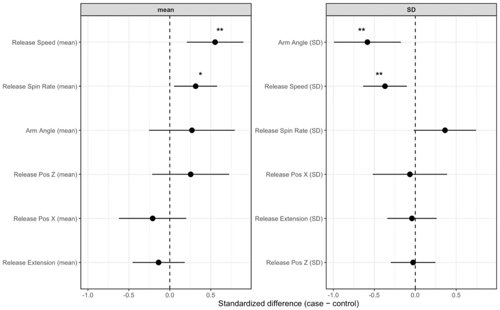
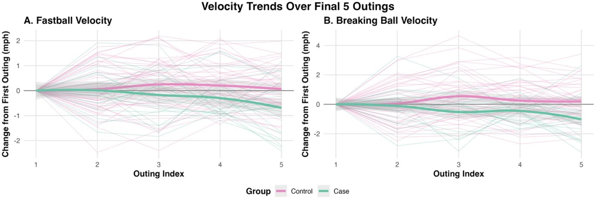
图片来源：原文开放全文（PubMed Central），版权归原出版方
▍运动防护 · 1 篇
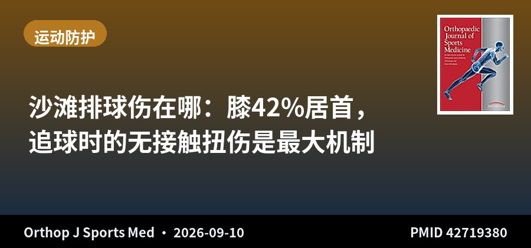
病例系列 · 175例损伤
沙滩排球伤在哪：膝42%居首，追球时的无接触扭伤是最大机制
Epidemiology, Mechanisms, and Treatments of Musculoskeletal Injuries in Beach Volleyball
Orthop J Sports Med · 2026-09-10 · Cedars-Sinai · PMID 42719380
一句话结论：175 例沙滩排球损伤中膝占 42.3% 居首，其次腕/手 16.6%、肩 14.3%；最常见机制是追球时的无接触扭转（26.5%）；35.1% 需手术，以 ACL 重建（21 例）和半月板手术（18 例）为主。
要点：160 例患者（男 58.3% / 女 41.7%）；无接触追球扭转 26.5%、过度使用 16.2%、拦网/扣球触球 16.2%、落地 14.5%；男女损伤部位分布无显著差异；与室内排球机制不同，沙滩的"追球"动作是关键致伤场景。
对临床的启示：沙滩排球是"软场地、高变向"的运动，膝损伤远超室内认知——尤其追球时的无接触扭转。对这类运动员，预防重点应放在变向/减速的神经肌肉控制，而非只防"落地伤"。
关于本栏目：每日定时检索 AJSM、Arthroscopy、Arthroscopy Techniques、KSSTA、Sports Health、OJSM、J ISAKOS、Sports Medicine、Foot & Ankle International、JSES 共 10 本运动医学核心期刊前一日新收录文献，按关节分类，AI 辅助生成中文精要。
声明：本内容由 AI 辅助整理，仅供学术交流参考，观点与数据请以原文为准，不构成诊疗建议。文献题录与摘要来源：PubMed。
— 运动医学 · 关节镜文献速览 · 第 006 期 —